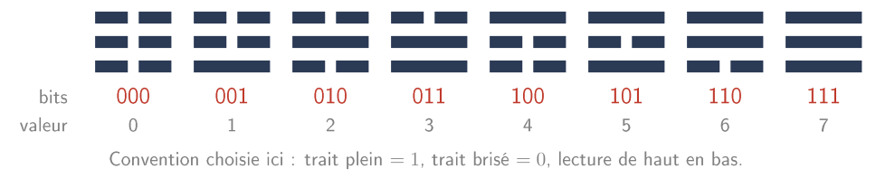
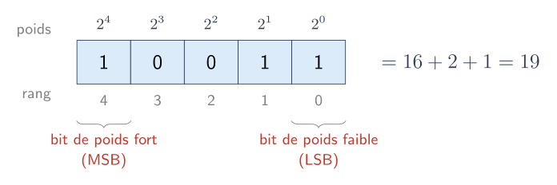
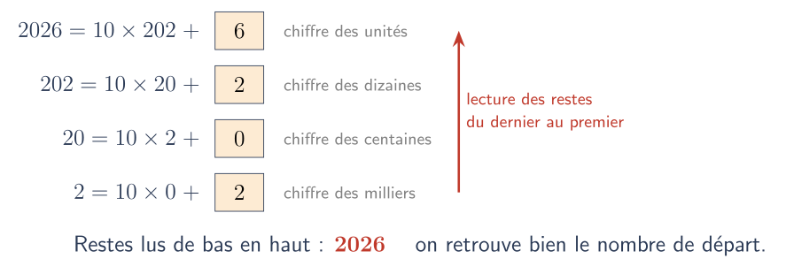
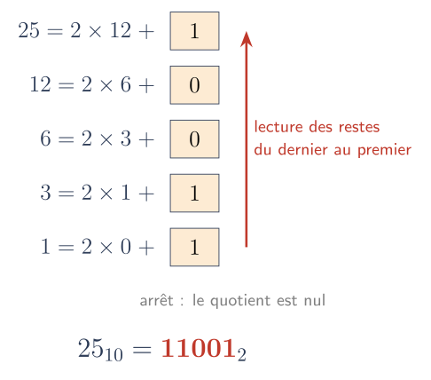
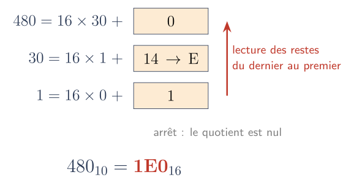
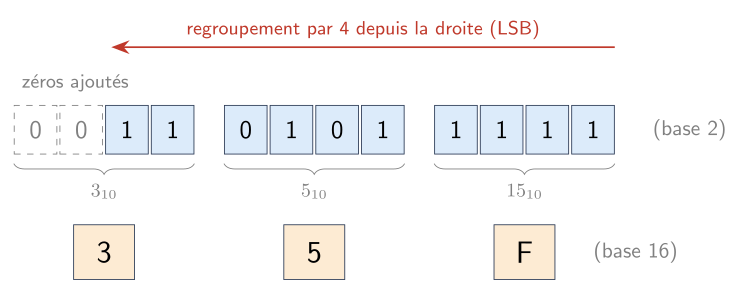

Écrire un entier naturel en base 2, 10 et 16⚓︎
Programme de première
Représentation des données : types et valeurs de base
| Contenus | Capacités attendues | Commentaires |
|---|---|---|
| Écriture d'un entier positif dans une base \(b \geqslant 2\) | Passer de la représentation d'une base dans une autre. | Les bases 2, 10 et 16 sont privilégiées. |
Repères historiques travaillés au passage (rubrique Histoire de l'informatique).
Objectifs
À la fin de ce cours, il faut être capable de:
- expliquer ce que signifie l'écriture d'un entier dans une base \(b\) ;
- passer de la base 2 ou 16 à la base 10, et inversement ;
- passer directement de la base 2 à la base 16, et inversement ;
- dire combien de valeurs distinctes on peut coder avec \(n\) bits ;
- utiliser les fonctions
bin,hexetintde Python.
1. Repères historiques⚓︎
L'idée d'écrire les nombres avec deux symboles seulement est bien plus ancienne que l'ordinateur.
- Thomas Harriot (1560-1621), mathématicien et astronome anglais, effectue au début du XVIIe siècle des calculs en base 2 dans ses manuscrits, qui ne seront pas publiés de son vivant (édition en ligne des manuscrits).
- Gottfried Wilhelm Leibniz (1646-1716) étudie la « progression dyadique » dès 1679 et publie en 1703 son Explication de l'arithmétique binaire. On lui attribue souvent, à tort, l'invention du binaire ; il en est surtout le premier grand promoteur.
- Le jésuite Joachim Bouvet lui fait découvrir les figures du Yi Jing, traditionnellement attribuées au souverain légendaire Fuxi. Leibniz y voit, après coup, une confirmation de son système : chaque figure est formée de traits pleins ou brisés, soit deux états.

Avec 3 traits à deux états, on obtient \(2 \times 2 \times 2 = 2^3 = 8\) trigrammes. Avec les 6 traits d'un hexagramme, on en obtient \(2^6 = 64\). C'est exactement le raisonnement que l'on fait avec des bits.
Et l'ordinateur ?
Le mot bit (binary digit) apparaît dans l'article fondateur de Claude Shannon sur la théorie de l'information (1948), qui l'attribue à John Tukey. Les premiers ordinateurs à programme enregistré datent de la même époque.
2. Bits, octets et mots⚓︎
2.1 Le bit⚓︎
Une machine numérique manipule des éléments qui ne peuvent prendre que deux états distincts, notés par convention \(0\) et \(1\). Un tel chiffre binaire s'appelle un bit.
À retenir
- Avec 1 bit, on distingue \(2^1 = 2\) valeurs.
- Avec \(n\) bits, on distingue \(2^n\) valeurs : chaque bit ajouté double le nombre de combinaisons.
2.2 L'octet et le mot⚓︎
- Un octet est un groupe de 8 bits : il permet de distinguer \(2^8 = 256\) valeurs.
- Le mot anglais byte est aujourd'hui employé dans le sens d'octet (historiquement, sa taille a varié selon les machines).
- Un mot (word) désigne la taille des données que le processeur traite naturellement en une opération. Elle dépend de l'architecture : 16, 32 ou 64 bits sur la plupart des machines actuelles.
Attention
Les expressions « double mot » (32 bits) ou « quadruple mot » (64 bits) viennent d'une convention propre à certaines familles de processeurs (où le mot faisait 16 bits). Ce ne sont pas des définitions générales.
2.3 Les unités de quantité d'information⚓︎
Les préfixes du Système international (kilo, méga, giga…) désignent des puissances de 10. Pour les puissances de 2, la Commission électrotechnique internationale (IEC) a normalisé fin 1998 des préfixes binaires :
| Préfixe SI | Valeur | Préfixe binaire (IEC) | Valeur |
|---|---|---|---|
| 1 ko (kilooctet) | \(10^3\) octets | 1 Kio (kibioctet) | \(2^{10} = 1\,024\) octets |
| 1 Mo (mégaoctet) | \(10^6\) octets | 1 Mio (mébioctet) | \(2^{20} = 1\,048\,576\) octets |
| 1 Go (gigaoctet) | \(10^9\) octets | 1 Gio (gibioctet) | \(2^{30}\) octets |
Un disque vendu « 1 To » contient \(10^{12}\) octets, soit environ \(931\) Gio : ce n'est pas une erreur, c'est un changement d'unité.
3. L'écriture positionnelle dans une base b⚓︎
3.1 Le principe, en base 10⚓︎
En base 10, l'écriture \(2026\) signifie :
Chaque chiffre est multiplié par une puissance de 10 qui dépend de sa position (son rang, compté à partir de \(0\) en partant de la droite).
3.2 Généralisation⚓︎
Définition
Soit \(b\) un entier, \(b \geqslant 2\). Tout entier naturel \(n\) s'écrit de façon unique sous la forme
où chaque chiffre \(a_i\) vérifie \(0 \leqslant a_i \leqslant b-1\) (et \(a_{k-1} \neq 0\) si \(n \neq 0\)).
On note alors \(n = (a_{k-1} \dots a_1 a_0)_b\), ou plus simplement \(a_{k-1} \dots a_1 a_0{}_b\). Le nombre \(b^i\) est le poids du chiffre de rang \(i\).
Un nombre n'a pas de base ; c'est son écriture qui en a une
\(25_{10}\) et \(11001_2\) sont deux écritures du même nombre. On dit « l'écriture binaire de 25 », pas « le nombre 25 en binaire ». De même, \(101\) n'a pas la même valeur selon la base : \(101_{10} = 101\), mais \(101_2 = 5\). Quand il y a ambiguïté, on indique toujours la base en indice.
| Base | Nom | Chiffres utilisés |
|---|---|---|
| 2 | binaire | 0, 1 |
| 10 | décimale | 0 à 9 |
| 16 | hexadécimale | 0 à 9, puis A, B, C, D, E, F (qui valent 10 à 15) |
3.3 Vocabulaire en binaire⚓︎

- Le bit le plus à droite (rang 0, poids \(2^0 = 1\)) est le bit de poids faible ou LSB (Least Significant Bit).
- Le bit le plus à gauche est le bit de poids fort ou MSB (Most Significant Bit).
Astuce : la parité se lit sur le bit de poids faible
Tous les poids sauf \(2^0\) sont pairs. Un entier est donc pair si son bit de poids faible vaut \(0\), impair s'il vaut \(1\).
4. Convertir vers la base 10⚓︎
On applique directement la définition : on additionne les chiffres multipliés par leur poids.
Exemples
Dans la seconde somme, le chiffre \(\text{E}\) est remplacé par sa valeur, 14.
Connaître ses puissances de 2
| \(2^0\) | \(2^1\) | \(2^2\) | \(2^3\) | \(2^4\) | \(2^5\) | \(2^6\) | \(2^7\) | \(2^8\) | \(2^9\) | \(2^{10}\) |
|---|---|---|---|---|---|---|---|---|---|---|
| 1 | 2 | 4 | 8 | 16 | 32 | 64 | 128 | 256 | 512 | 1024 |
5. Convertir depuis la base 10 : les divisions successives⚓︎
5.1 La méthode⚓︎
Méthode
Pour écrire l'entier \(n\) en base \(b\) :
- on effectue la division euclidienne de \(n\) par \(b\) : \(n = b \times q + r\), avec \(0 \leqslant r < b\) ;
- on recommence avec le quotient \(q\), tant que le quotient n'est pas nul ;
- l'écriture en base \(b\) est formée des restes lus du dernier au premier.
Pourquoi lit-on les restes à l'envers ?⚓︎
Faisons la même chose en base 10, où l'on connaît déjà la réponse : divisons \(2026\) par \(10\), encore et encore.

- Diviser par 10, c'est « couper » le dernier chiffre : le reste est le chiffre des unités, le quotient est ce qui reste à gauche (\(2026 \to 202\), reste \(6\)).
- La première division donne donc le chiffre le plus à droite ; la suivante, celui juste à sa gauche ; et ainsi de suite.
- Pour écrire le nombre de gauche à droite, il faut donc lire les restes du dernier au premier.
En base 2, c'est exactement pareil : diviser par 2 « coupe » le dernier bit. Le premier reste est le bit de poids faible (celui qui indique si le nombre est pair ou impair), le dernier reste est le bit de poids fort.
Pour aller plus loin : l'explication avec les notations du cours
Si \(n = (a_{k-1} \dots a_1 a_0)_b\), alors \(n = b \times (a_{k-1} \dots a_1)_b + a_0\) avec \(0 \leqslant a_0 < b\). La division euclidienne de \(n\) par \(b\) a donc pour reste \(a_0\) (le chiffre de rang 0) et pour quotient le nombre écrit \(a_{k-1} \dots a_1\) : on a « coupé » le dernier chiffre. On recommence avec ce quotient pour obtenir \(a_1\), puis \(a_2\), etc.
5.2 En base 2⚓︎

Vérification : \(16 + 8 + 1 = 25\). ✔
Autre méthode en base 2 : retirer les puissances de 2
On cherche la plus grande puissance de 2 inférieure ou égale au nombre, on la retire, et on recommence avec le reste. \(25 = 16 + 9 = 16 + 8 + 1\) : les poids \(2^4\), \(2^3\) et \(2^0\) sont présents, d'où \(11001_2\).
5.3 En base 16⚓︎

Un reste compris entre 10 et 15 est remplacé par le chiffre hexadécimal correspondant (A à F).
6. Passer directement du binaire à l'hexadécimal⚓︎
6.1 Pourquoi ça marche⚓︎
Comme \(16 = 2^4\), un chiffre hexadécimal correspond exactement à 4 bits. La table suivante est à connaître (ou à savoir reconstruire très vite).
| Décimal | Binaire | Hexa | Décimal | Binaire | Hexa | |
|---|---|---|---|---|---|---|
| 0 | 0000 | 0 | 8 | 1000 | 8 | |
| 1 | 0001 | 1 | 9 | 1001 | 9 | |
| 2 | 0010 | 2 | 10 | 1010 | A | |
| 3 | 0011 | 3 | 11 | 1011 | B | |
| 4 | 0100 | 4 | 12 | 1100 | C | |
| 5 | 0101 | 5 | 13 | 1101 | D | |
| 6 | 0110 | 6 | 14 | 1110 | E | |
| 7 | 0111 | 7 | 15 | 1111 | F |
6.2 Du binaire vers l'hexadécimal⚓︎
Méthode
On regroupe les bits par paquets de 4 en partant de la droite (du bit de poids faible), on complète si besoin le paquet de gauche par des zéros, puis on remplace chaque paquet par son chiffre hexadécimal.

Erreur fréquente
Regrouper en partant de la gauche donne \(1101\ 0111\ 11\), soit un résultat faux. Les zéros ajoutés à gauche ne changent pas la valeur ; des zéros ajoutés à droite la multiplieraient.
6.3 De l'hexadécimal vers le binaire⚓︎
On remplace chaque chiffre hexadécimal par ses 4 bits (en gardant les zéros à l'intérieur) :
Où rencontre-t-on l'hexadécimal ?
Un octet s'écrit avec exactement 2 chiffres hexadécimaux (de \(00\) à \(\text{FF}\)). D'où son usage pour :
- les couleurs en HTML/CSS :
#FF8000= rouge \(\text{FF}_{16} = 255\), vert \(80_{16} = 128\), bleu \(00_{16} = 0\) ; - les adresses matérielles (MAC) des cartes réseau, comme
3C:52:82:1A:F0:07; - l'affichage du contenu de la mémoire ou d'un fichier, octet par octet.
7. Combien de bits faut-il ?⚓︎
À retenir
- Avec \(k\) bits, on écrit tous les entiers naturels de \(0\) à \(2^k - 1\) (soit \(2^k\) valeurs).
- Un entier \(n \geqslant 1\) s'écrit avec exactement \(k\) bits lorsque \(2^{k-1} \leqslant n < 2^k\).
Exemple
\(512 = 2^9 \leqslant 1000 < 2^{10} = 1024\) : il faut 10 bits pour écrire \(1000\).
| Taille | Plus grand entier naturel représentable |
|---|---|
| 8 bits | \(2^8 - 1 = 255\) |
| 16 bits | \(2^{16} - 1 = 65\,535\) |
| 32 bits | \(2^{32} - 1 = 4\,294\,967\,295\) |
| 64 bits | \(2^{64} - 1 \approx 1{,}8 \times 10^{19}\) |
Ces tailles « courantes » seront reprises avec la représentation des entiers relatifs (complément à 2). En Python, les entiers ne sont pas limités à 64 bits : leur taille s'adapte à la valeur.
8. En Python⚓︎
1 2 3 4 5 6 7 8 9 10 11 12 13 14 | |
Entier ou chaîne ?
0b11001 et 25 sont le même entier : Python l'affiche en décimal. En revanche, bin(25) est une chaîne de caractères (type(bin(25)) renvoie <class 'str'>) : on ne peut pas calculer avec.
9. En résumé⚓︎
L'essentiel
- En base \(b\), \(n = \sum a_i\, b^i\) avec des chiffres \(0 \leqslant a_i \leqslant b-1\).
- Base \(b\) → base 10 : somme des chiffres multipliés par leur poids \(b^i\).
- Base 10 → base \(b\) : divisions euclidiennes successives par \(b\) jusqu'à un quotient nul, restes lus du dernier au premier.
- Binaire ↔ hexadécimal : 1 chiffre hexadécimal = 4 bits ; on regroupe depuis la droite.
- \(k\) bits permettent d'écrire les entiers de \(0\) à \(2^k - 1\).